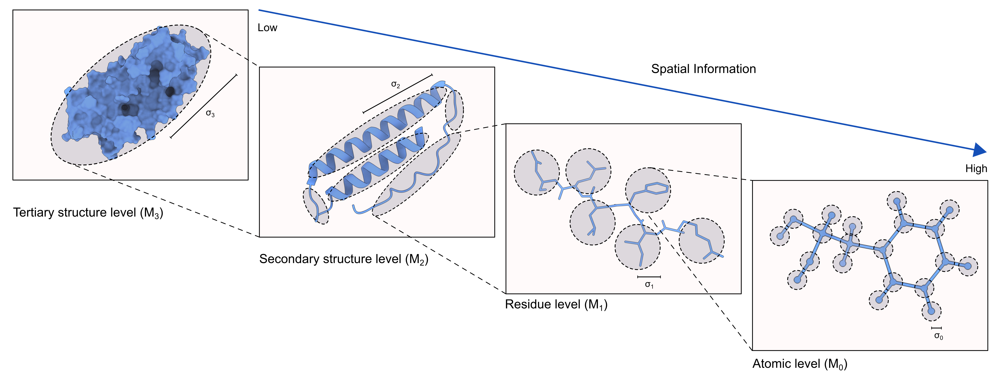

Welcome to HARP

Hierarchical Atomic Resolution Perception (HARP) is a Python package for the evaluation of local atomic resolution in a cryoEM map and for map-to-model validation of the corresponding atomic structural model. HARP calculates the atomic resolution of the cryoEM map at the level of resides using the framework of hierarchical resolution, through a comparison between atomic level models and residue-level models.
About HARP
HARP is an ongoing project based out of the Kinz-Thompson lab at Rutgers University-Newark. HARP utilizes a mathematical framework to describe the latent structural information in a noisy dataset (described in Ray, et al.).
Learn more about HARP by reading the preprint of the manuscript on bioRxiv: Scale-dependent hierarchical resolution: applications to atomic resolution and model validation in cryoEM.
Citing HARP
The HARP manuscript is currently a preprint. If you use HARP in your work, please cite:
Ray, Korak Kumar, Kinz-Thompson, Colin D., Scale-dependent hierarchical resolution: applications to atomic resolution and model validation in cryoEM. bioRxiv 2023.10.17.562748; doi: https://doi.org/10.1101/2023.10.17.562748
Developers
Funding
The development of HARP has been supported by the National Science Foundation (NSF).